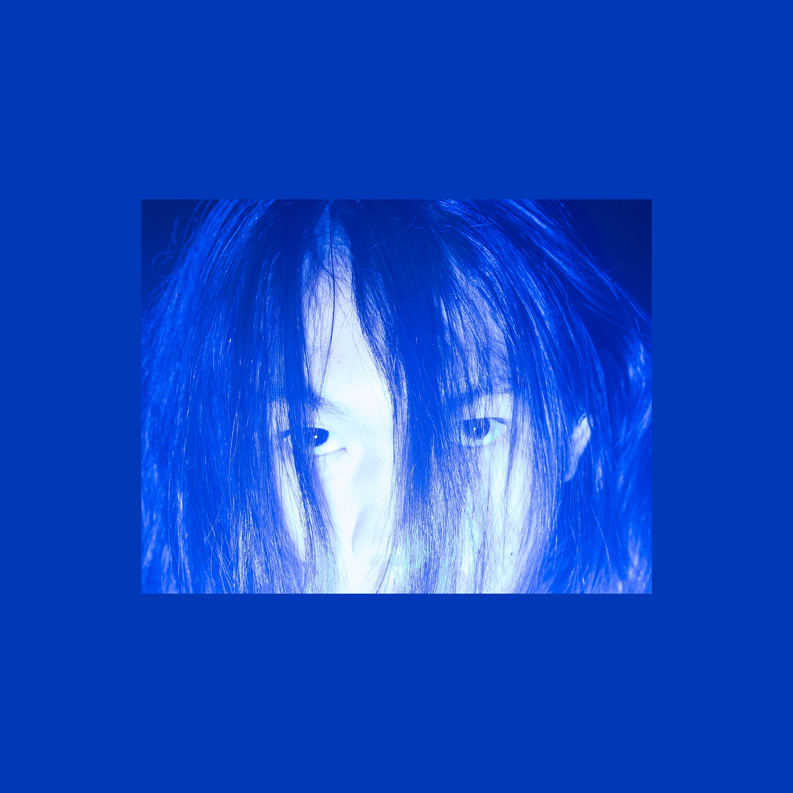
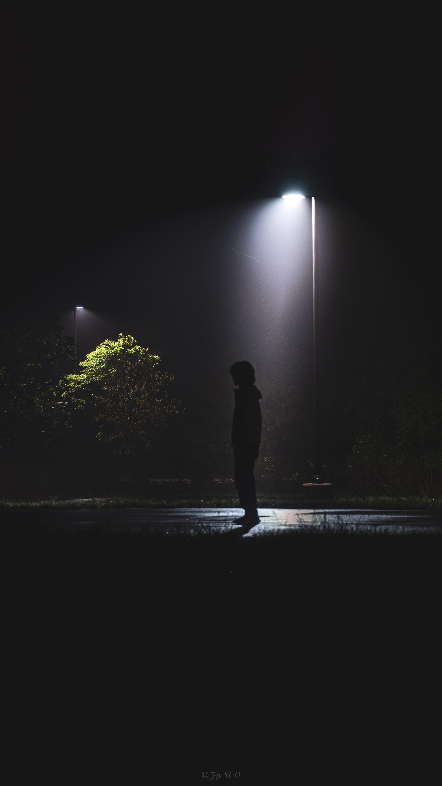
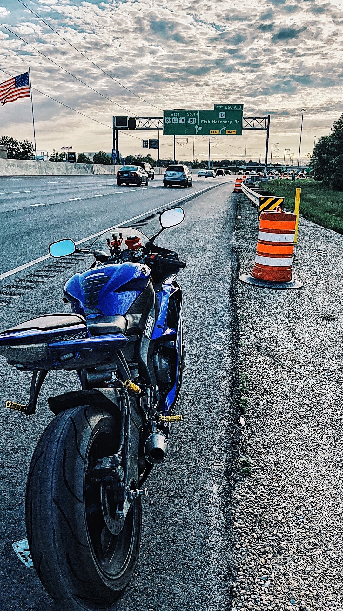
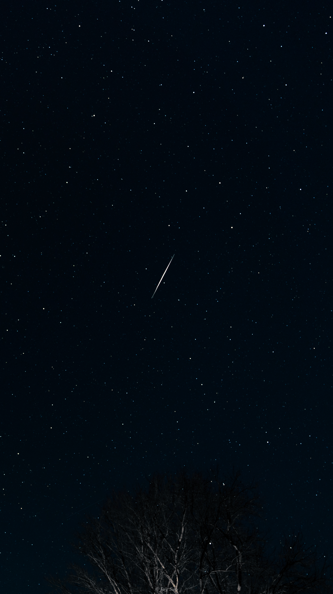

My name is Jay Suo. I was born in Lanzhou, China. I chose photography because I want to capture the beautiful moments in life. It really helped me to memorize how good the world is.

This image was taken when I lived in Fitchburg with my friend. We went out for a walk and suddenly I thought that the lights really capture my eyes and I saw the loneliness of the night, which also overwhelmed me. So I took the tripod out and captured this moment of me.

This image is of my motorcycle. It is a 2007 Yamaha R6 with 120 HP and over 50 N/m of torque. I enjory the speed and how wind flew by my body, so I purchased this to go over 140mph on track when I was Freshman. It also helped me to know a lot of good people that we used to ride on weeknds in mountains.

I took this picture in January 2024 when my friends told me there would be a meteor shower and people in Madison have high chance to see it. We drove 2 hours and it was so beautiful that I printed out this image and hang it on the walls of my bedroom. Everyone should see meteor shower once in their life time.